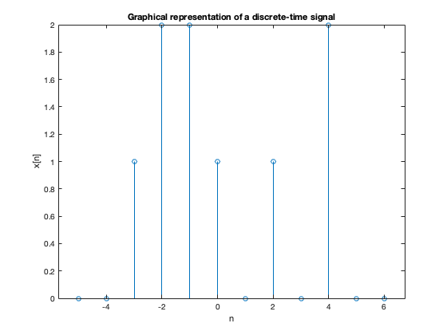
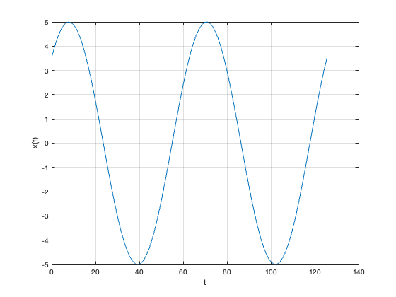
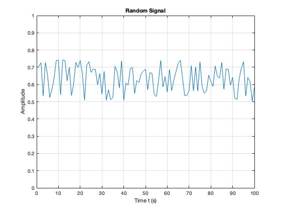

n = -5:6;
xn = [0,0,1,2,2,1,0,1,0,2,0,0];
stem(n,xn),title('Graphical representation of a discrete-time signal'),xlabel('n'),ylabel('x[n]')

t = linspace(0,2*pi*20,100);
xt = 5*sin(10*t + pi/4);
plot(t,xt),grid,xlabel('t'),ylabel('x(t)')

%% Plot a Random Signal
plot(0.5 + 0.25 * rand(100,1)),ylim([0,1]),grid,title('Random Signal'),...
xlabel('Time t (s)'),ylabel('Amplitude')
